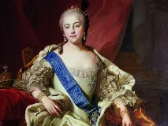
Élisabeth Ire de Russiewiki-fr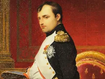
Napoléonmemo:rois_france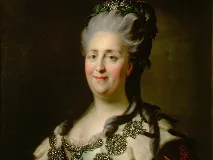
Catherine IIwiki-fr Qin Shi Huangwiki-fr
Qin Shi Huangwiki-fr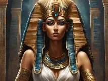
Cléopâtrewiki-fr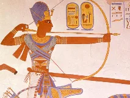
Ramsès IIwiki-fr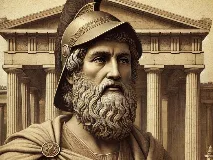
Périclèswiki-fr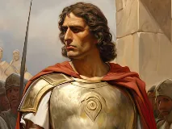
Alexandre le Grandwiki-fr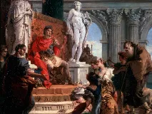
Augustewiki-fr Trajanwiki-fr
Trajanwiki-fr Tokugawa Ieyasuwiki-fr
Tokugawa Ieyasuwiki-fr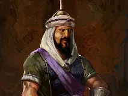
Saladinwiki-fr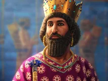
Darius Ierwiki-fr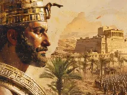
Cyrus le Grandwiki-fr Gengis Khanwiki-fr
Gengis Khanwiki-fr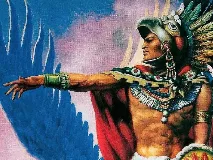
Moctezuma Ierwiki-fr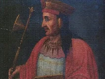
Pachacutiwiki-fr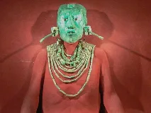
Pacal le Grandbing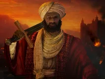
Askia Mohammedwiki-fr
Christine de Suèdewiki-fr
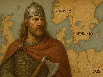
Harald Hardradawiki-fr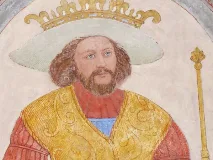
Harald à la Dent bleuewiki-fr
Guillaume d'Orangebing
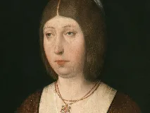
Isabelle Irewiki-fr
Marie Irebing
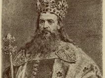
Casimir IIIwiki-fr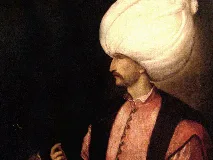
Soliman le Magnifiquewiki-fr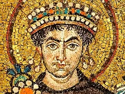
Justinien Ierwiki-fr Théodorawiki-fr
Théodorawiki-fr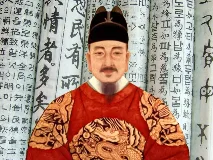
Sejong le Grandwiki-fr Jayavarman VIIwiki-fr
Jayavarman VIIwiki-fr
Amanitorewiki-fr
 Mvemba a Nzingawiki-fr
Mvemba a Nzingawiki-fr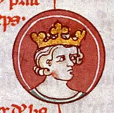
Robert Ier d'Ecossememo:rois_france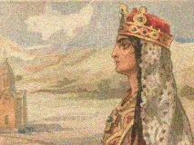
Tamar de Géorgiewiki-fr Matthias Corvinwiki-fr
Matthias Corvinwiki-fr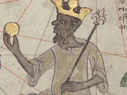
Mansa Moussawiki-fr Hannibal Barcawiki-fr
Hannibal Barcawiki-fr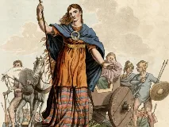
Boadicéewiki-fr Vercingétorixwiki-fr
Vercingétorixwiki-fr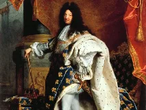
Louis XIVwiki-fr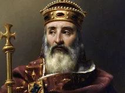
Charlemagnememo:rois_france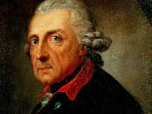
Frédéric II le Grandwiki-fr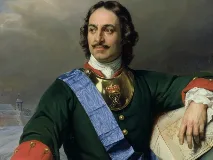
Pierre le Grandwiki-fr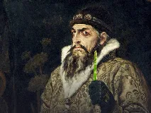
Ivan le Terriblewiki-fr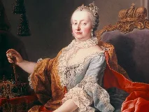
Marie-Thérèse d'Autrichewiki-fr Wu Zetianwiki-fr
Wu Zetianwiki-fr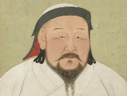
Kubilai Khanwiki-fr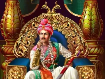
Ashokawiki-fr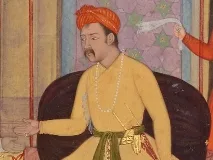
Akbarwiki-fr Attilawiki-fr
Attilawiki-fr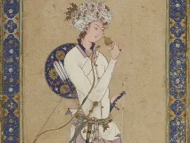
Harun al-Rashidwiki-fr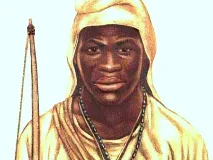
Sundiata Keïtaimposée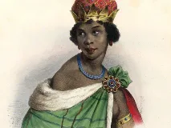
Ana de Sousa Nzinga Mbandewiki-fr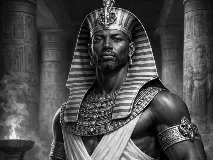
Piyewiki-fr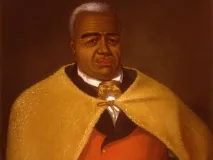
Kamehameha Ierwiki-fr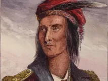
Tecumsehwiki-fr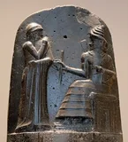
Hammurabiwiki-fr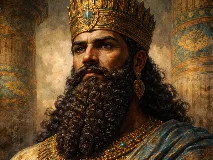
Nabuchodonosor IIwiki-fr
Hatchepsoutwiki-fr
Toutânkhamonwiki-fr
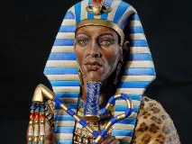
Akhenatonwiki-fr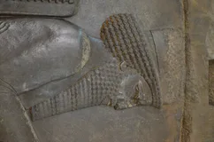
Xerxès Ierwiki-fr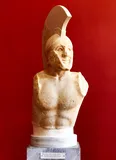
Léonidas Ierwiki-fr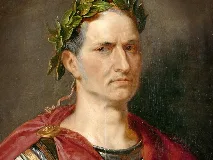
Jules Césarwiki-fr
Marc Antoinewiki-fr
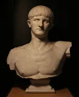
Néronwiki-fr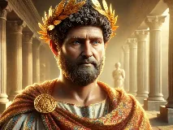
Marc Aurèlewiki-fr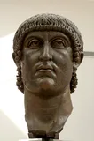
Constantin Ierwiki-fr
Clovis Iermemo:rois_france
Guillaume le Conquérantwiki-fr
Richard Cœur de Lionwiki-fr
Frédéric Barberoussewiki-fr
Philippe Augustememo:rois_france
Louis IXwiki-fr
Aliénor d'Aquitainewiki-fr
Élisabeth Ire d'Angleterrewiki-fr
Henri VIIIwiki-fr
François Iermemo:rois_france
Charles Quintwiki-fr
Philippe II d'Espagnewiki-fr
Henri IVwiki-fr
Oliver Cromwellwiki-fr
Louis XVImemo:rois_france
Mehmed IIwiki-fr
Tamerlanwiki-fr
Oda Nobunagawiki-fr
Toyotomi Hideyoshiwiki-fr
Kangxibing
Shah Jahanwiki-fr